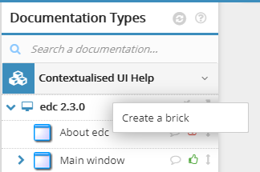
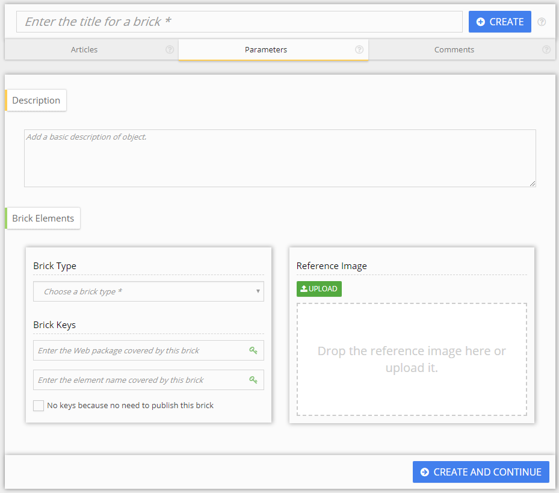
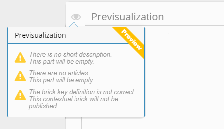
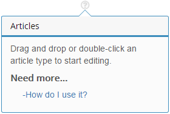

Create the brick
To create a UI help brick, go to Documentation Types > Contextualised UI Help.
To create a brick at the root of the tree, right-click on the highest item and select Create a brick.

You can also create bricks under existing bricks to create a tree structure.
The following window opens:

Fill in the parameters
Parameters exist only for bricks. They coordinate development and publishing. The following elements are mandatory:
- a title
The icon to the left of the field lets you access the preview. You can see what your documentation looks like once exported in a pop-up window. The window also warns you about potentially missing information:

- a brick type. This represents the type of user interface being documented: window, tab, panel, etc.
- brick keys. It is the unique ID of the interface being documented. It is used to link the user help to the UI. Developers can easily find this ID.
If the brick you are creating should not be exported, check No keys because no need to publish this brick. If you check this, previsualization becomes unavailable.
Other fields are:
- description: lets you enter a quick description of the documented window. The description later appears as a preview in the exported documentation:

- reference image. This lets you start documenting the interface even if you can't access it. It is also a record of the state the interface was in the last time it was documented. This is useful to check the documentation is up to date. This image is not published.
Click Save to finish the brick creation. The brick appears in the Contextualised UI Help panel. You can now write in it.